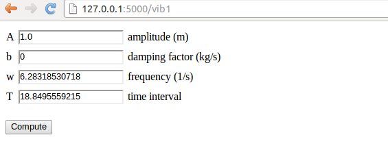

Web frameworks
The MVC pattern
A very simple application
Application of the MVC pattern
Making a Flask application
Programming the Flask application
Equipping the input page with output results
Splitting the app into model, view, and controller files
Troubleshooting
Making a Django application
Setting up a Django project
Setting up a Django application
Programming the Django application
Equipping the input page with output results
Handling multiple input variables in Flask
Programming the Flask application
Implementing error checking in the template
Using style sheets
Using LaTeX mathematics
Rearranging the elements in the HTML template
Bootstrap HTML style
Custom validation
Using Flask validators
Tailored validation
Tailored validation of intervals
Demo
Autogenerating the code
Avoiding plot files
PNG plots
SVG plots
User login and storage of computed results
Project 1: Using Bootstrap styles
Further work
Resources
Handling multiple input variables in Django
Programming the Django application
Custom validation
Customizing widgets
Exercises
Exercise 2: Add two numbers
Exercise 3: Extend the vib3_flask app
Exercise 4: Equip the vib3_flask app with more data types
Exercise 5: Auto-generate code from function signature
Resources
Flask resources
Django resources
Remaining
Computational scientists may want to offer their applications through a web interface, thereby making a web application. Basically, this means that users can set input data to the application on a web page, then click on some Compute button, and back comes a new web page with the results of the computations. The web interface can either be used as a GUI locally on the scientist's computer, or the interface can be depolyed to a server and made available to the whole world.
Web applications of the mentioned type can be created from scratch using CGI scripts in (e.g.) Python, but the code quickly gets longer and more involved as the complexity of the web interface grows. Nowadays, most web applications are created with the aid of web frameworks, which are software packages that simplify the programming tasks of offering services through the Internet. The downside of web frameworks is that there is a significant amount of steps and details to learn before your first simple demo application works. The upside is that advanced applications are within reach, without an overwhelming amount of programming, as soon as you have understood the basic demos.
We shall explore two web frameworks: the very popular Django framework and the more high-level and easy-to-use framework Flask. Our introductory examples were also implemented in the web2py framework, but according to our experience, Flask and Django are easier to explain to scientists. The primary advantage of Django over other web frameworks is the rich set of documentation and examples. Googling for "Django tutorials" gives lots of hits including a list of web tutorials and a list of YouTube videos. There is also an electronic Django book. At the time of this writing, the Flask documentation is not comparable. The two most important resources are the official web site and the WTForms Documentation. There is, unfortunately, hardly any examples on how Django or Flask can be used to enable typical scientific applications for the web, and that is why we have developed some targeted examples on this topic.
A basic question is, of course, whether you should apply Flask or Django for your web project. Googling for flask vs django gives a lot of diverging opinions. The authors' viewpoint is that Flask is much easier to get started with than Django. You can grow your application to a really big one with both frameworks, but some advanced features is easier in one framework than in the other.
The problem for a computational scientist who wants to enable mathematical calculations through the web is that most of the introductory examples on utilizing a particular web framework address web applications of very different nature, e.g., blogs and polls. Therefore, we have made an alternative introduction which explains, in the simplest possible way, how web frameworks can be used to
All the files associated with this document are available in a GitHub repository. The relevant files for the web applications are located in a subtree doc/src/web4sa/src-web4sa/apps of this repository.
The MVC pattern stands for Model-View-Controller and is a way of separating the user's interaction with an application from the inner workings of the application. In a scientific application this usually means separating mathematical computations from the user interface and visualization of results. The Wikipedia definition of the MVC pattern gives a very high-level explanation of what the model, view, and controller do and mentions the fact that different web frameworks interpret the three components differently. Any web application works with a set of data and needs a user interface for the communication of data between the user and some data processing software. The classical MVC pattern introduces
Web frameworks often have their own way of interpreting the model, view, and controller parts of the MVC pattern. In particular, most frameworks often divide the view into two parts: one software component and one HTML template. The latter takes care of the look and feel of the web page while the former often takes the role of being the controller too. For our scientific applications we shall employ an interpretation of the MVC pattern which is compatible with what we need later on:
Flask does not force any MVC pattern on the programmer, but
the code needed to build web applications can easily be split into
model, view, controller, and compute components, as will be shown later.
Django, on the other hand, automatically generates application files with names
views.py and models.py so it is
necessary to have some idea what Django means by these terms.
The controller functionality in Django lies both in the views.py file and
in the configuration
files (settings.py and urls.py). The view component of the application
consists both of the views.py file and template files used to create
the HTML code in the web pages.
Forthcoming examples will illustrate how a scientific application is split to meet the requirements of the MVC software design pattern.
We shall start with the simplest possible application, a "scientific hello world program", where the task is to read a number and write out "Hello, World!" followed by the sine of the number. This application has one input variable and a line of text as output.
Our first implementation reads the input from the command line and writes the results to the terminal window:
#!/usr/bin/env python
import sys, math
r = float(sys.argv[1])
s = math.sin(r)
print 'Hello, World! sin(%g)=%g' % (r, s)
In the terminal we can exemplify the program
Terminal> python hw.py 1.2
Hello, World! sin(1.2)=0.932039
The task of the web version of this program is to read the r
variable from a web page, compute the sine,
and write out a new web page with the resulting text.
Before thinking of a web application, we first refactor our program
such that it fits with the classical MVC pattern and a compute component.
The refactoring does not change the functionality of the code, it
just distributes the original statements in functions and modules.
Here we create four modules: model, view,
compute, and controller.
compute module contains a function compute(r) that performs
the mathematics and returns the value s, which equals sin(r).model module holds the input data, here r.view module has two functions, one for reading input data,
get_input,
and one for presenting the output, present_output.
The latter takes the input, calls compute functionalty, and
generates the output.controller module calls the view to initialize
the model's data from the command line. Thereafter, the
view is called to present the output.model.py file contains the r variable, which must
be declared with a default value in order to create the data object:
r = 0.0 # input
s = None # output
The view.py file is restricted to the communication with the user and reads
import sys
import compute
# Input: float r
# Output: "Hello, World! sin(r)=..."
def get_input():
"""Get input data from the command line."""
r = float(sys.argv[1])
return r
def present_output(r):
"""Write results to terminal window."""
s = compute.compute(r)
print 'Hello, World! sin(%g)=%g' % (r, s)
The mathematics is encapsulated in compute.py:
import math
def compute(r):
return math.sin(r)
Finally, controller.py glues the model and the view:
import model, view
model.r = view.get_input()
view.present_output(model.r)
Let us try our refactored code:
Terminal> python controller.py 1.2
Hello, World! sin(1.2)=0.932039
The next step is to create a web interface to our scientific hello world
program such that we can fill in the number r in a text field, click a
Compute button and get back a new web page with the output text
shown above: "Hello, World! sin(r)=s".
Not much code or configuration is needed to make a Flask application. Actually one short file is enough. For this file to work you need to install Flask and some corresponding packages. This is easiest performed by
Terminal> sudo pip install Flask
Terminal> sudo pip install WTForms
You must add --upgrade to upgrade a previous installation (pip install --upgrade Flask).
The user interaction.
We want our input page to feature a text field where the user can
write the value of r, see Figure 1.
By clicking on the equals button
the corresponding s value is computed and written out the result page
seen in Figure 2.

The Python code.
Flask does not require us to use the MVC pattern so there is actually
no need to split the original program into model, view, controller,
and compute files as already explained (but it will be
done later). First we make a controller.py file where the view, the
model, and the controller parts appear within the same file.
The compute component is always in a separate file as
we like to encapsulate the computations completely from user
interfaces.
The view that the user sees is determined by
HTML templates in a subdirectory templates, and consequently
we name the template files view*.html.
The model and other parts of the view concept are just parts of
the controller.py file. The complete file is short and explained
in detail below.
from flask import Flask, render_template, request
from wtforms import Form, FloatField, validators
from compute import compute
app = Flask(__name__)
# Model
class InputForm(Form):
r = FloatField(validators=[validators.InputRequired()])
# View
@app.route('/hw1', methods=['GET', 'POST'])
def index():
form = InputForm(request.form)
if request.method == 'POST' and form.validate():
r = form.r.data
s = compute(r)
return render_template("view_output.html", form=form, s=s)
else:
return render_template("view_input.html", form=form)
if __name__ == '__main__':
app.run(debug=True)
Dissection.
The web application is the app object of class Flask, and initialized
as shown. The model is a special Flask class derived from Form
where the input variable in the app is listed as a
static class attribute and initialized
by a special form field object from the wtforms package.
Such form field objects correspond to HTML forms in the input page.
For the r variable we apply FloatField since it is a floating-point
variable. A default validator, here checking that the user supplies
a real number, is automatically included, but we add another validator,
InputRequired, to force the user to provide input before clicking on
the equals button.
The view part of this Python code consists of
a URL and a corresponding function to call when the URL is invoked.
The function name is here chosen to be index (inspired by the standard
index.html page that is the main page of a web app). The
decorator @app.route('/hw1', ...) maps the URL
http://127.0.0.1:5000/hw1 to a call to index.
The methods argument must be as shown to allow the user to communicate
with the web page.
The index function first makes a form object based on the data in
the model, here class InputForm. Then there are two possibilities:
either the user has provided data in the HTML form or the user is
to be offered an input form. In the former case, request.method
equals 'POST' and we can extract the numerical value of r
from the form object, using form.r.data, call up our mathematical
computations, and make a web page with the result.
In the latter case, we make an input page as displayed in
Figure 1.
The template files.
Making a web page with Flask is conveniently done by an HTML
template. Since the output page is simplest we display the
view_output.html template first:
Hello, World! sin({{ form.r.data }})={{s}}.
Keyword arguments sent to render_template are available in the
HTML template. Here we have form and s.
With the form object we extract the value of
r in the HTML code by {{ form.r.data }}. Similarly, the value of s
is simply {{ s }}.
The HTML template for the input page is slightly more complicated as we need to use an HTML form:
<form method=post action="">
Hello, World! The sine of {{ form.r }}
<input type=submit value=equals>
</form>
Testing the application. We collect the files associated with a Flask application (often called just app) in a directory, here called hw1. All you have to do in order to run this web application is to find this directory and run
Terminal> python controller.py
* Running on http://127.0.0.1:5000/
* Restarting with reloader
Open a new window or tab in your browser and type in the URL
http://127.0.0.1:5000/hw1.
Our application made two distinct pages for grabbing input from the user and presenting the result. It is often more natural to add the result to the input page. This is particularly the case in the present web application, which is a kind of calculator. Figure 3 shows what the user sees after clicking the equals button.

To let the user stay within the same page, we create a new directory
hw2
for this modified Flask app and copy the files from the previous
hw1 directory. The idea now is to make use of just one
template, in templates/view.html:
<form method=post action="">
Hello, World! The sine of
{{( form.r )}}
<input type=submit value=equals>
{% if s != None %}
{{s}}
{% endif %}
</form>
The form is identical to what we used in view_input.html in
the hw1 directory, and the only
new thing is the output of s below the form.
The template language supports some programming with Python objects
inside {% and %} tags.
Specifically in this file, we can test on the value of s:
if it is None, we know that the computations are not performed and
s should not appear on the page, otherwise s holds the sine
value and we can write it out. Note that, contrary to plain Python,
the template language does not rely on indentation of blocks and
therefore needs an explicit end statement {% endif %} to finish
the if-test.
The generated HTML code from this template file reads
<form method=post action="">
Hello, World! The sine of
<input id="r" name="r" type="text" value="1.2">
<input type=submit value=equals>
0.932039085967
</form>
The index function of our modified application
needs adjustments since we use the same
template for the input and the output page:
# View
@app.route('/hw2', methods=['GET', 'POST'])
def index():
form = InputForm(request.form)
if request.method == 'POST' and form.validate():
r = form.r.data
s = compute(r)
else:
s = None
return render_template("view.html", form=form, s=s)
It is seen that if the user has given data, s is a float, otherwise
s is None. You are encouraged to test the app by running
Terminal> python controller.py
and loading http://127.0.0.1:5000/hw2 into your browser.
A nice little exercise is to control the formatting of the result s.
To this end, you can simply transform s to a string: s = '%.5f' % s before
sending it to render_template.
In our previous two Flask apps we have had the view displayed for the
user in a separate template file, and the computations as always in
compute.py, but everything else was placed in one file controller.py.
For illustration of the MVC concept we
may split the controller.py into two files: model.py and
controller.py. The view is in templates/view.html.
These new files are located in a
directory
hw3_flask
The contents
in the files reflect the splitting introduced in the original
scientific hello world program in the section Application of the MVC pattern.
The model.py file now consists of the input form class:
from wtforms import Form, FloatField, validators
class InputForm(Form):
r = FloatField(validators=[validators.InputRequired()])
The file templates/view.html is as before, while controller.py contains
from flask import Flask, render_template, request
from compute import compute
app = Flask(__name__)
@app.route('/hw3', methods=['GET', 'POST'])
def index():
form = InputForm(request.form)
if request.method == 'POST' and form.validate():
r = form.r.data
s = compute(r)
else:
s = None
return render_template("view.html", form=form, s=s)
if __name__ == '__main__':
app.run(debug=True)
The statements are indentical to those in the hw2 app, only
the organization of the statement in files differ.
Address already in use.
You can easily kill the Flask application and restart it, but sometimes
you will get an error that the address is already in use.
To recover from this problem, run the lsof program to see which program
that applies the 5000 port (Flask runs its server on http://127.0.0.1:5000,
which means that it uses the 5000 port). Find the PID of the program
that occupies the port and force abortion of that program:
Terminal> lsof -i :5000
COMMAND PID USER FD TYPE DEVICE SIZE/OFF NODE NAME
python 48824 hpl 3u IPv4 1128848 0t0 TCP ...
Terminal> kill -9 48824
You are now ready to restart a Flask application.
We recommend to
download and istall the latest official version of Django from
http://www.djangoproject.com/download/. Pack out the tarfile, go
to the directory, and run setup.py:
Terminal> tar xvzf Django-1.5-tar.gz
Terminal> cd Django-1.5
Terminal> sudo python setup.py install
The version in this example, 1.5, may be different at the time you follow these instructions.
Django applies two concepts: project and application (or app). The app is the program we want to run through a web interface. The project is a Python package containing common settings and configurations for a collection of apps. This means that before we can make a Django app, we must to establish a Django project.
A Django project for managing a set of Django apps is created by the command
Terminal> django-admin.py startproject django_project
The result in this example
is a directory django_project whose content can be explored
by some ls and cd commands:
Terminal> ls django_project
manage.py django_project
Terminal> cd django_project/django_project
Terminal> ls
__init__.py settings.py urls.py wsgi.py
The meaning of the generated files is briefly listed below.
django_project/ directory is just a container for your project. Its name does not matter to Django.manage.py is a command-line utility that lets you interact with this Django project in various ways. You will typically run manage.py to launch a Django application.django_project/ directory is a Python package for the Django project. Its name is used in import statements in Python code (e.g., import django_project.settings).django_project/__init__.py is an empty file that just tells Python that this directory should be considered a Python package.django_project/settings.py contains the settings and configurations for this Django project.django_project/urls.py maps URLs to specific functions and thereby defines that actions that various URLs imply.django_project/wsgi.py is not needed in our examples.
Terminal> python manage.py runserver
Validating models...
0 errors found
March 34, 201x - 01:09:24
Django version 1.5, using settings 'django_project.settings'
Development server is running at http://127.0.0.1:8000/
Quit the server with CONTROL-C.
The output from starting the server tells that the server runs on the
URL http://127.0.0.1:8000/.
Load this URL into your browser to see a welcome message from Django,
meaning that the server is working.
Despite the fact that our introductory
web applications do not need a database, you
have to register a database with any Django project. To this end,
open the django_project/settings.py file in a text editor,
locate the DATABASES dictionary and type in the following
code:
import os
def relative2absolute_path(relative_path):
"""Return the absolute path correspodning to relative_path."""
dir_of_this_file = os.path.dirname(os.path.abspath(__file__))
return dir_of_this_file + '/' + relative_path
DATABASES = {
'default' : {
'ENGINE': 'django.db.backends.sqlite3',
'NAME': relative2absolute_path('../database.db')
}
}
The settings.py file needs absolute paths to files, while it is
more convenient for us to specify relative paths. Therefore,
we made a function that figures out the absolute path to the settings.py
file and then combines this absolute path with the relative path.
The location and name of the database file can be chosen as desired.
Note that one should not use os.path.join to create paths as Django
always applies the forward slash between directories, also on Windows.
The next step is to create a Django app for our scientific hello
world program. We can place the app in any directory, but here we
utilize the following organization.
As neighbor to django_project we have
a directory apps containing our various scientific applications.
Under apps we create a directory django_apps with
our different versions of Django applications.
The directory py_apps contains the
original hw.py program in the subdirectory orig,
while split of this
program according to the MVC pattern appears in the mvc directory.
The directory django_apps/hw1 is our first attempt to write
a Django-based web interface for the hw.py program.
The directory structure is laid out by
Terminal> cd ..
Terminal> mkdir apps
Terminal> cd apps
Terminal> mkdir py_apps
Terminal> cd py
Terminal> mkdir orig mvc
Terminal> cd ../..
Terminal> mkdir django_apps
Terminal> cd django_apps
The file hw.py is moved to orig while mvc contains
the MVC refactored version with the files model.py, view.py, compute.py,
and controller.py.
The hw1 directory, containing our first Django application, must be
made with
Terminal> python ../../django_project/manage.py startapp hw1
The command creates a directory hw1 with four empty files:
Terminal> cd hw1
Terminal> ls
__init__.py models.py tests.py views.py
The __init__.py file will remain empty to just indicate that the
Django application is a Python package. The other files need to be
filled with the right content, which happens in the next section.
At this point,
we need to register some information about our application in the
django_project/settings.py and django_project/urls.py files.
Step 1: Add the app.
Locate the INSTALLED_APPS
tuple in settings.py and add your Django application as a Python package:
INSTALLED_APPS = (
'django.contrib.auth',
'django.contrib.contenttypes',
...
'hw1',
)
Unfortunately, Django will not be able to find the package hw1
unless we register the parent directory in sys.path:
import sys
sys.path.insert(0, relative2absolute_path('../../apps/django_apps'))
Note here that the relative path is given with respect to the
location of the settings.py script.
Step 2: Add a template directory.
Make a subdirectory templates under hw1,
Terminal> mkdir templates
and add the absolute path of this directory to the TEMPLATE_DIRS tuple:
TEMPLATE_DIRS = (
relative2absolute_path('../../apps/django_apps/hw1/templates'),
)
The templates directory will hold templates for the HTML code applied
in the web interfaces. The trailing comma is important as this is
a tuple with only one element.
Step 3: Define the URL.
We need to connect the Django app with
an URL. Our app will be associated with a Python function index
in the views module within the hw1 package.
Say we want the corresponding URL to
be named hw1 relative to the server URL.
This information is registered in the django_project/urls.py file
by the syntax
urlpatterns = patterns('',
url(r'^hw1/', 'django_apps.hw1.views.index'),
The first argument to the url function is a regular expression for
the URL and the second argument is the name of the function to call,
using Python's syntax for a function index in a module views in
a package hw1.
The function name index resembles the index.html main page associated
with an URL, but any other name than index can be used.
The Django application is about filling the files views.py and models.py
with content. The mathematical computations are performed in compute.py
so we copy this file from the mvc directory to the hw1 directory
for convenience (we could alternatively add ../mvc to sys.path such that
import compute would work from the hw1 directory).
The user interaction.
The web application offers a text field where the user can
write the value of r, see Figure 4.
After clicking on the equals button,
the mathematics is performed and a new page as
seen in Figure 5 appears.


The model.
The models.py file contains the model, which consists
of the data we need in the application, stored in Django's data types.
Our data consists of one number, called r, and models.py then
look like
from django.db import models
from django.forms import ModelForm
class Input(models.Model):
r = models.FloatField()
class InputForm(ModelForm):
class Meta:
model = Input
The Input class lists variables representing data as static class
attributes. The django.db.models module contains various classes
for different types of data, here we use FloatField to represent
a floating-point number.
The InputForm class has a the shown generic form across applications
if we by convention apply the name Input for the class holding the data.
The view.
The views.py file contains a function index which defines
the actions we want to perform when invoking
the URL ( here http://127.0.0.1:8000/hw1/).
In addition, views.py has the present_output function from
the view.py file in the mvc directory.
from django.shortcuts import render_to_response
from django.template import RequestContext
from django.http import HttpResponse
from models import InputForm
from compute import compute
def index(request):
if request.method == 'POST':
form = InputForm(request.POST)
if form.is_valid():
form = form.save(commit=False)
return present_output(form)
else:
form = InputForm()
return render_to_response('hw1.html',
{'form': form}, context_instance=RequestContext(request))
def present_output(form):
r = form.r
s = compute(r)
return HttpResponse('Hello, World! sin(%s)=%s' % (r, s))
The index function deserves some explanation. It must take one
argument, usually called request. There are two modes in the function. Either
the user has provided input on the web page, which means that
request.method equals 'POST', or we show a new web page
with which the user is supposed to interact.
Making the input page.
The input consists of a web form with
one field where we can fill in our r variable. This page
is realized by the two central statements
# Make info needed in the web form
form = InputForm()
# Make HTML code
render_to_response('hw1.html',
{'form': form}, context_instance=RequestContext(request))
The hw1.html file resides in the templates subdirectory and contains
a template for the HTML code:
<form method="post" action="">{% csrf_token %}
Hello, World! The sine of {{ form.r }}
<input type="submit" value="equals" />
</form>
This is a template file because it contains instructions like
{% csrf_token %} and variables like {{ form.r }}. Django will
replace the former by some appropriate HTML statements, while the
latter simply extracts the numerical value of the variable r in
our form (specified in the Input class in models.py).
Typically, this hw1.html file
results in the HTML code
<form method="post" action="">
<div style='display:none'>
<input type='hidden' name='csrfmiddlewaretoken'
value='oPWMuuy1gLlXm9GvUZINv49eVUYnux5Q' /></div>
Hello, World! The sine of <input type="text" name="r" id="id_r" />
<input type="submit" value="equals" />
</form>
Making the results page.
When then user has filled in a value in the text field on the input
page, the index function is called again and request.method equals
'POST'. A new form object is made, this time with user info (request.POST).
We can check that the form is valid and if so, proceed with
computations followed by presenting the results in a
new web page (see Figure 5):
def index(request):
if request.method == 'POST':
form = InputForm(request.POST)
if form.is_valid():
form = form.save(commit=False)
return present_output(form)
def present_output(form):
r = form.r
s = compute(r)
return HttpResponse('Hello, World! sin(%s)=%s' % (r, s))
The numerical value of r as given by the user is available as form.r.
Instead of using a template for the output page, which is natural to
do in more advanced cases, we here illustrate the possibility to
send raw HTML to the output page by returning an HttpResponse
object initialized by a string containing the desired HTML code.
Launch this application by filling in the address http://127.0.0.1:8000/hw1/
in your web browser. Make sure the Django development server is running,
and if not, restart it by
Terminal> python ../../../django_project/manage.py runserver
Fill
in some number on the input page and view the output.
To show how easy it is to change the application, invoke the views.py
file in an editor and add some color to the output HTML code from
the present_output function:
return HttpResponse("""
<font color='blue'>Hello</font>, World!
sin(%s)=%s
"""% (r, s))
Go back to the input page, provide a new number, and observe how the "Hello" word now has a blue color.
Instead of making a separate output page with the result, we can simply add the sine value to the input page. This makes the user feel that she interacts with the same page, as when operating a calculator. The output page should then look as shown in Figure 6.

We need to make a new Django application, now called
hw2.
Instead of running the standard
manage.py startapp hw2 command,
we can simply copy the hw1
directory to hw2. We need, of course, to add information about this
new application in settings.py and urls.py.
In the former file we must have
TEMPLATE_DIRS = (
relative2absolute_path('../../apps/django_apps/hw1/templates'),
relative2absolute_path('../../apps/django_apps/hw2/templates'),
)
INSTALLED_APPS = (
'django.contrib.auth',
'django.contrib.contenttypes',
'django.contrib.sessions',
'django.contrib.sites',
'django.contrib.messages',
'django.contrib.staticfiles',
# Uncomment the next line to enable the admin:
# 'django.contrib.admin',
# Uncomment the next line to enable admin documentation:
# 'django.contrib.admindocs',
'hw1',
'hw2',
)
In urls.py we add the URL hw2 which is to call our index function
in the views.py file of the hw2 app:
urlpatterns = patterns('',
url(r'^hw1/', 'django_apps.hw1.views.index'),
url(r'^hw2/', 'django_apps.hw2.views.index'),
The views.py file changes a bit since we shall generate almost the same
web page on input and output. This makes the present_output function
unnatural, and everything is done within the index function:
def index(request):
s = None # initial value of result
if request.method == 'POST':
form = InputForm(request.POST)
if form.is_valid():
form = form.save(commit=False)
r = form.r
s = compute(r)
else:
form = InputForm()
return render_to_response('hw2.html',
{'form': form,
's': '%.5f' % s if isinstance(s, float) else ''
}, context_instance=RequestContext(request))
Note that the output variable s is computed within the index
function and defaults to None. The template file hw2.html
looks like
<form method="post" action="">{% csrf_token %}
Hello, World! The sine of {{ form.r }}
<input type="submit" value="equals" />
{% if s != '' %}
{{ s }}
{% endif %}
</form>
The difference from hw1.html is that we right after the equals
button write out the value of s. However, we make a test that
the value is only written if it is computed, here recognized by
being a non-empty string. The s in the template file
is substituted by the value of the object
corresponding to the key 's' in the
dictionary we pass to the render_to_response. As seen,
we pass a string where s is formatted with five digits if s
is a float, i.e., if s is computed. Otherwise, s has the
default value None and we send an empty string to the template.
The template language allows tests using Python syntax, but the
if-block must be explicitly ended by {% endif %}.
The scientific hello world example shows how to work with one input
variable and one output variable. We can easily derive an extensible
recipe for apps with a collection of input variables and some
associated HTML code as result. Multiple input variables are listed
in the InputForm class using different types for different forms
(text field, float field, integer field, check box field for boolean
values, etc.). The value of these variables will be available in a
form object for computation. It is then a matter of setting
up a template code where the various variables if the form object
are formatted in HTML code as desired.
Our sample web application addresses the task of plotting the function \( u(t)=Ae^{-bt}\sin (wt) \) for \( t\in [0,T] \). The web application must have fields for the numbers \( A \), \( b \), \( w \), and \( T \), and a Compute button, as shown in Figure 7. Filling in values, say \( 0.1 \) for \( b \) and \( 20 \) for \( T \), results in what we see in Figure 8, i.e., a plot of \( u(t) \) is added after the input fields and the Compute button.


We shall make a series of different versions of this app:
vib1 for the basic set-up and illustration of tailoring the HTML code.vib2 for custom validation of input, governed by the programmer.vib3 for automatic generation of the Flask app (!).vib4 for inlining graphics in the HTML code.vib5 for storing computed results in user accounts.
The forthcoming text explains the necessary steps to realize a
Flask app that behaves as depicted in Figures 7
and 8. We start with the
compute.py module since it contains only the computation of \( u(t) \)
and the making of the plot, without any interaction with Flask.
The files associated with this app are found in the vib1 directory.
The compute part.
More specifically, inside compute.py, we have a function for
evaluating \( u(t) \) and a compute function for making the plot. The
return value of the latter is the name of the plot file, which should
get a unique name every time the compute function is called such
that the browser cannot reuse an already cached image when displaying
the plot. Flask
applications must have all extra files (CSS, images, etc.) in a
subdirectory static.
from numpy import exp, cos, linspace
import matplotlib.pyplot as plt
import os, time, glob
def damped_vibrations(t, A, b, w):
return A*exp(-b*t)*cos(w*t)
def compute(A, b, w, T, resolution=500):
"""Return filename of plot of the damped_vibration function."""
t = linspace(0, T, resolution+1)
y = damped_vibrations(t, A, b, w)
plt.figure() # needed to avoid adding curves in plot
plt.plot(t, y)
plt.title('A=%g, b=%g, w=%g' % (A, b, w))
if not os.path.isdir('static'):
os.mkdir('static')
else:
# Remove old plot files
for filename in glob.glob(os.path.join('static', '*.png')):
os.remove(filename)
# Use time since Jan 1, 1970 in filename in order make
# a unique filename that the browser has not chached
plotfile = os.path.join('static', str(time.time()) + '.png')
plt.savefig(plotfile)
return plotfile
if __name__ == '__main__':
print compute(1, 0.1, 1, 20)
It is in general not a good idea to write plots to file or let a
web app write to file. If this app is deployed at some web site and
multiple users are running the app, the os.remove statements may remove
plots created by all other users. However, the app is useful as a
graphical user interface run locally on a machine.
Later, we shall avoid writing plot files and instead
store plots in strings and embed the strings
in the img tag in the HTML code.
We organize the model, view, and controller as three separate files, as illustrated in the section Splitting the app into model, view, and controller files. This more complicated app involves more code and especially the model will soon be handy to isolate in its own file.
The model.
Our first version of model.py reads
from wtforms import Form, FloatField, validators
from math import pi
class InputForm(Form):
A = FloatField(
label='amplitude (m)', default=1.0,
validators=[validators.InputRequired()])
b = FloatField(
label='damping factor (kg/s)', default=0,
validators=[validators.InputRequired()])
w = FloatField(
label='frequency (1/s)', default=2*pi,
validators=[validators.InputRequired()])
T = FloatField(
label='time interval (s)', default=18,
validators=[validators.InputRequired()])
As seen, the field classes can take a label argument for a longer
description, here also including the units in which the variable is
measured. It is also possible to add a description argument with
some help message. Furthermore, we include a default value, which
will appear in the text field such that the user does not need to
fill in all values.
The view.
The view component will of course make use of templates, and we shall experiment
with different templates. Therefore, we allow a command-line argument
to this Flask app for choosing which template we want. The rest of
the controller.py file follows much the same set up as for the scientific
hello world app:
from model import InputForm
from flask import Flask, render_template, request
from compute import compute
import sys
try:
template_name = sys.argv[1]
except IndexError:
template_name = 'view_plain'
app = Flask(__name__)
if template_name == 'view_flask_bootstrap':
from flask_bootstrap import Bootstrap
Bootstrap(app)
@app.route('/vib1', methods=['GET', 'POST'])
def index():
form = InputForm(request.form)
if request.method == 'POST' and form.validate():
result = compute(form.A.data, form.b.data,
form.w.data, form.T.data)
else:
result = None
print 'XXX', result
return render_template(template_name + '.html',
form=form, result=result)
if __name__ == '__main__':
app.run(debug=True)
The HTML template.
The details governing how the web page really looks like lie in the
template file. Since we have several fields and want them nicely
align in a tabular fashion, we place the field name, text areas,
and labels inside an HTML table in our first attempt to write a
template, view_plain.html:
<form method=post action="">
<table>
{% for field in form %}
<tr>
<td>{{ field.name }}</td><td>{{ field }}</td>
<td>{{ field.label }}</td>
</tr>
{% endfor %}
</table>
<p><input type=submit value=Compute></form></p>
<p>
{% if result != None %}
<img src="{{ result }}" width="500">
{% endif %}
</p>
Observe how easy it is to iterate over the form object and grab data
for each field: field.name is the name of the variable in the
InputForm class, field.label is the full name with units as given
through the label keyword when constructing the field object, and
writing the field object itself generates the text area for
input (i.e., the HTML input form). The control statements we can
use in the template are part of the Jinja2
templating language. For now, the if-test, for-loop and
output of values ({{ object }}) are enough to generate the HTML
code we want.
Recall that the objects we need in the template, like result and form
in the present case, are transferred to the template via keyword
arguments to the render_template function. We can easily pass on
any object in our application to the template. Debugging of the template
is done by viewing the HTML source of the web page in the browser.
You are encouraged to go to the vib directory,
run python controller.py, and load
`http://127.0.0.1:5000/vib1`
into your web browser for testing.
What happens if the user gives wrong input, for instance the letters asd
instead of a number? Actually nothing! The FloatField object
checks that the input is compatible with a real number in the
form.validate() call, but returns just False if this is not
the case. Looking at the code in controller.py,
def index():
form = InputForm(request.form)
if request.method == 'POST' and form.validate():
result = compute(form.A.data, form.b.data,
form.w.data, form.T.data)
else:
result = None
we realize that wrong input implies result = None and no computations
and no plot! Fortunately, each field object gets an attribute error
with information on errors that occur on input. We can write out
this information on the web page, as exemplified in the template
view_errcheck.html:
<form method=post action="">
<table>
{% for field in form %}
<tr>
<td>{{ field.name }}</td><td>{{ field(size=12) }}</td>
<td>{{ field.label }}</td>
{% if field.errors %}
<td><ul class=errors>
{% for error in field.errors %}
<li><font color="red">{{ error }}</font></li>
{% endfor %}</ul></td>
{% endif %}
</tr>
{% endfor %}
</table>
<p><input type=submit value=Compute></form></p>
<p>
{% if result != None %}
<img src="{{ result }}" width="500">
{% endif %}
</p>
Two things are worth noticing here:
A field by
writing asd instead of a number. This input
triggers an error, whose message is written in red to the right of the label,
see Figure 9.

It is possible to use the additional HTML5 fields for input in a Flask context. Instead of explaining how here, we recommend to use the Parampool package to automatically generate Flask files with HTML5 fields.
Web developers make heavy use of CSS style sheets to control the look
and feel of web pages. Templates can utilize style sheets as any other
standard HTML code. Here is a very simple example where we introduce
a class name for the HTML table's column with the field name and set the
foreground color of the text in this column to blue.
The style sheet is called basic.css and must reside in the
static subdirectory of the Flask application directory. The content
of basic.css is just the line
td.name { color: blue; }
The view_css.html file using this style sheet features a link tag
to the style sheet in the HTML header, and the column containing
the field name has
the HTML tag <td class="name"> to trigger the specification in
the style sheet:
<html>
<head>
<link rel="stylesheet" href="static/basic.css" type="text/css">
</head>
<body>
<form method=post action="">
<table>
{% for field in form %}
<tr>
<td class="name">{{ field.name }}</td>
<td>{{ field(size=12) }}</td>
<td>{{ field.label }}</td>
Just run python controller.py view_css to see that the names
of the variables to set in the web page are blue.
Scientific applications frequently have many input data that are
defined through mathematics and where the typesetting on the
web page should be as close as possible to the typesetting where
the mathematics is documented. In the present example we would like
to typeset \( A \), \( b \), \( w \), and \( T \) with italic font as done
in LaTeX. Fortunately, native LaTeX typesetting is available in
HTML through the tool MathJax.
Our template view_tex.html enables MathJax. Formulas are written
with standard LaTeX inside \( and \), while equations are surrounded
by $$. Here we use formulas only:
<script type="text/x-mathjax-config">
MathJax.Hub.Config({
TeX: {
equationNumbers: { autoNumber: "AMS" },
extensions: ["AMSmath.js", "AMSsymbols.js", "autobold.js"]
}
});
</script>
<script type="text/javascript"
src="http://cdn.mathjax.org/mathjax/latest/MathJax.js?config=TeX-AMS-MML_HTMLorMML">
</script>
This web page visualizes the function \(
u(t) = Ae^{-bt}\sin (w t), \hbox{ for } t\in [0,T]
\).
<form method=post action="">
<table>
{% for field in form %}
<tr>
<td>\( {{ field.name }} \)</td><td>{{ field(size=12) }}</td>
<td>{{ field.label }}</td>
Figure 10 displays how the LaTeX rendering looks like in the browser.

Now we want to place the plot to the right of the input forms in the web page, see Figure 11. This can be accomplished by having an outer table with two rows. The first row contains the table with the input forms in the first column and the plot in the second column, while the second row features the Compute button in the first column.

The enabling template file is view_table.html:
<script type="text/x-mathjax-config">
MathJax.Hub.Config({
TeX: {
equationNumbers: { autoNumber: "AMS" },
extensions: ["AMSmath.js", "AMSsymbols.js", "autobold.js"]
}
});
</script>
<script type="text/javascript"
src="http://cdn.mathjax.org/mathjax/latest/MathJax.js?config=TeX-AMS-MML_HTMLorMML">
</script>
This web page visualizes the function \(
u(t) = Ae^{-bt}\sin (w t), \hbox{ for } t\in [0,T]
\).
<form method=post action="">
<table> <!-- table with forms to the left and plot to the right -->
<tr><td>
<table>
{% for field in form %}
<tr>
<td>\( {{ field.name }} \)</td><td>{{ field(size=12) }}</td>
<td>{{ field.label }}</td>
{% if field.errors %}
<td><ul class=errors>
{% for error in field.errors %}
<li><font color="red">{{ error }}</font></li>
{% endfor %}</ul></td>
{% endif %}
</tr>
{% endfor %}
</table>
</td>
<td>
<p>
{% if result != None %}
<img src="{{ result }}" width="500">
{% endif %}
</p>
</td></tr>
<tr>
<td><p><input type=submit value=Compute></p></td>
</tr>
</table>
</form>
The Bootstrap framework for creating web pages
has been very popular in recent years, both because of the design and
the automatic support for responsive pages on all sorts of devices.
Bootstrap can be used in combination with Flask. The template file
view_bootstrap.html is identical to the former view_table.html,
except that we load the Bootstrap CSS file and include in comments
how to add the typical navigation bar found in many Bootstrap-based
web pages. The template looks like
<!DOCTYPE html>
<html lang="en">
<link href="http://netdna.bootstrapcdn.com/bootswatch/3.1.1/readable/bootstrap.min.css" rel="stylesheet">
<script type="text/x-mathjax-config">
MathJax.Hub.Config({
TeX: {
equationNumbers: { autoNumber: "AMS" },
extensions: ["AMSmath.js", "AMSsymbols.js", "autobold.js"]
}
});
</script>
<script type="text/javascript"
src="http://cdn.mathjax.org/mathjax/latest/MathJax.js?config=TeX-AMS-MML_HTMLorMML">
</script>
<!--
<nav class="navbar navbar-default" role="navigation">
<div class="collapse navbar-collapse" id="bs-example-navbar-collapse-1">
<ul class="nav navbar-nav">
{% for f in some_sequence %}
<li><a href="/{{f}}">{{f}}</a></li>
{% endfor %}
</ul>
</div>
</nav>
-->
This web page visualizes the function \(
u(t) = Ae^{-bt}\sin (w t), \hbox{ for } t\in [0,T]
\).
<!-- table with forms to the left and plot to the right -->
<form class="navbar-form navbar-top" method="post" action="">
<table class="table table-hover">
<tr><td>
<div class="form-group">
{% for field in form %}
<div class="input-group">
<span class="input-group-addon"> \( {{ field.name }} \) </span>
{{field(class_="form-control")}}
</div>
{% if field.errors %}
<table class="table table-hover">
{% for error in field.errors %}
<tr><td class="danger">{{ error }}</td></tr>
{% endfor %}
</table>
{% endif %}
{% endfor %}
</td>
<!-- 2nd column contains the plot -->
<td>
<p>
{% if result != None %}
<img src="{{ result }}" width="500">
{% endif %}
</p>
</td></tr>
<!-- next row contains the Compute button -->
<tr>
<td><p>
<input type="submit" value="Compute" class="btn btn-default">
</td></tr>
</table>
</form>
</div>
</html>
The input fields and fonts now get the typical Bootstrap look and feel.
While view_bootstrap.html makes use of plain Bootstrap HTML code, there is
also a higher-level framework, called Flask-Bootstrap that combines Flask and Bootstrap. Installation of
this extension is done by sudo pip install flask-bootstrap.
After app = Flask(__name__) we need to do
from flask_bootstrap import Bootstrap
Bootstrap(app)
The template employs new keywords extends and block:
{% extends "bootstrap/base.html" %}
{% block styles %}
{{super()}}
<style>
.appsize { width: 500px }
</style>
<script type="text/x-mathjax-config">
MathJax.Hub.Config({
TeX: {
equationNumbers: { autoNumber: "AMS" },
extensions: ["AMSmath.js", "AMSsymbols.js", "autobold.js"]
}
});
</script>
<script type="text/javascript"
src="http://cdn.mathjax.org/mathjax/latest/MathJax.js?config=TeX-AMS-MML_HTMLorMML">
</script>
{% endblock %}
<!--
{% block navbar %}
<nav class="navbar navbar-default" role="navigation">
<div class="collapse navbar-collapse" id="bs-example-navbar-collapse-1">
<ul class="nav navbar-nav">
{% for f in some_sequence %}
<li><a href="/{{f}}">{{f}}</a></li>
{% endfor %}
</ul>
</div>
</nav>
{% endblock %}
-->
This web page visualizes the function \(
u(t) = Ae^{-bt}\sin (w t), \hbox{ for } t\in [0,T]
\).
{% block content %}
<!-- table with forms to the left and plot to the right -->
<form class="navbar-form navbar-top" method="post" action="">
<table class="table table-hover">
<tr><td>
<div class="form-group">
{% for field in form %}
<div class="input-group">
<span class="input-group-addon"> \( {{ field.name }} \) </span>
{{field(class_="form-control")}}
</div>
{% if field.errors %}
<table class="table table-hover">
{% for error in field.errors %}
<tr><td class="danger">{{ error }}</td></tr>
{% endfor %}
</table>
{% endif %}
{% endfor %}
</td>
<!-- 2nd column contains the plot -->
<td>
<p>
{% if result != None %}
<img src="{{ result }}" width="500">
{% endif %}
</p>
</td></tr>
<!-- next row contains the Compute button -->
<tr>
<td><p>
<input type="submit" value="Compute" class="btn btn-default">
</td></tr>
</table>
</form>
</div>
</html>
{% endblock %}
The FloatField objects can check that the input is compatible with
a number, but what if we want to control that \( A>0 \), \( b>0 \), and
\( T \) is not greater than 30 periods (otherwise the plot gets cluttered)?
We can write functions for checking appropriate conditions and
supply the function to the list of validator functions in the call to
the FloatField constructor or other field constructors. The extra
code is a part of the model.py and the presented extensions appear
in the directory vib2.
The simplest approach to validation is to use existing functionality
in the web framework. Checking that \( A>0 \) can be done by
the NumberRange validator which checks that the value is inside
a prescribed interval:
from wtforms import Form, FloatField, validators
class InputForm(Form):
A = FloatField(
label='amplitude (m)', default=1.0,
validators=[validators.NumberRange(0, 1E+20)])
We can also easily provide our own more tailored validators.
As an example, let us explain how we can check that \( T \) is less than 30 periods.
One period is \( 2\pi /w \) so we need to check if \( T> 30\cdot 2\pi/w \)
and raise an exception in that case.
A validation function takes two arguments: the whole form and the
specific field to test:
def check_T(form, field):
"""Form validation: failure if T > 30 periods."""
w = form.w.data
T = field.data
period = 2*pi/w
if T > 30*period:
num_periods = int(round(T/period))
raise validators.ValidationError(
'Cannot plot as much as %d periods! T<%.2f' %
(num_periods, 30*period))
The appropriate exception is of type validators.ValidationError.
Observe that through form we have in fact access to all the input
data so we can easily use the value of \( w \) when checking the validity
of the value of \( T \). The check_T function is easy to
add to the list of validator functions in the call to the FloatField
constructor for T:
class InputForm(Form):
...
T = FloatField(
label='time interval', default=6*pi,
validators=[validators.InputRequired(), check_T])
The validator
objects are tested one by one as they appear in the list, and if
one fails, the others are not invoked.
We therefore add check_T after the check of input such that we know we
have a value for all data when we run the computations and test
in check_T.
Although there is already a NumberRange validator for checking
whether a value is inside an interval, we can write our own
version with some improved functionality for open intervals where
the maximum or minimum value can be infinite.
The infinite value can on input be represented by None.
A general such function may take the form
def check_interval(form, field, min_value=None, max_value=None):
"""For validation: failure if value is outside an interval."""
failure = False
if min_value is not None:
if field.data < min_value:
failure = True
if max_value is not None:
if field.data > max_value:
failure = True
if failure:
raise validators.ValidationError(
'%s=%s not in [%s, %s]' %
(field.name, field.data,
'-infty' if min_value is None else str(min_value),
'infty' if max_value is None else str(max_value)))
The problem is that check_interval takes four arguments, not only
the form and field arguments that a validator function in the
Flask framework can accept.
The way out of this difficulty is to use a Python tool functools.partial
which allows us to call a function with some of the arguments set beforehand.
Here, we want to create a new function that calls check_interval
with some prescribed values of min_value and max_value.
This function looks like it does not have these arguments, only
form and field. The following function produces this function, which we
can use as a valid Flask validator function:
import functools
def interval(min_value=None, max_value=None):
return functools.partial(
check_interval, min_value=min_value, max_value=max_value)
We can now in any field constructor just add
interval(a, b) as a validator function, here checking that \( b\in [0,\infty) \):
class InputForm(Form):
...
b = FloatField(
label='damping factor (kg/s)', default=0,
validators=[validators.InputRequired(), interval(0,None)])
Let us test our tailored error checking. Run python controller.py
in the vib2 directory and fill in \( -1.0 \) in the \( b \) field.
Pressing Compute invokes our interval(0,None) function, which
is nothing but a call to check_interval with the
arguments field, form, 0, and None.
Inside this function,
the test if field.data < min_value becomes true, failure
is set, and the exception is raised. The message in the exception
is available in the field.errors attribute so our template
will write it out in red, see Figure 12.
The template used in vib2 is basically the same as view_tex.html
in vib1, i.e., it feaures LaTeX mathematics and checking of
field.errors.

Finally, we mention a detail in the controller.py file in the vib2
app: instead of sending form.var.data to the compute function we
may automatically generate a set of local variables such that the
application of data from the web page, here in the compute call, looks nicer:
def index():
form = InputForm(request.form)
if request.method == 'POST' and form.validate():
for field in form:
# Make local variable (name field.name)
exec('%s = %s' % (field.name, field.data))
result = compute(A, b, w, T)
else:
result = None
return render_template('view.html', form=form, result=result)
if __name__ == '__main__':
app.run(debug=True)
The idea is just to run exec on a declaration of a local variable
with name field.name for each field in the form. This trick is often
neat if web variables are buried in objects (form.T.data) and you want these
variables in your
code to look like they do in mathematical writing (T for \( T \)).
We shall now present generic model.py and controller.py
files that work with any compute function (!). This example will
demonstrate some advanced, powerful features of Python. The source code
is found in the vib3
directory.
Inspecting function signatures.
The basic idea is that the Python module inspect can be used to
retrieve the names of the arguments and the default values of
keyword arguments of any given compute function. Say we have some
def mycompute(A, m=0, s=1, w=1, x_range=[-3,3]):
...
return result
Running
import inspect
arg_names = inspect.getargspec(mycompute).args
defaults = inspect.getargspec(mycompute).defaults
leads to
arg_names = ['A', 'm', 's', 'w', 'x_range']
defaults = (0, 1, 1, [-3, 3])
We have all the argument names in arg_names and
defaults[i] is the default value of keyword argument
arg_names[j], where j = len(arg_names) - len(defaults) + i.
Generating the model.
Knowing the name name of some argument in the compute
function, we can make the corresponding class attribute
in the InputForm class by
setattr(InputForm, name, FloatForm())
For name equal to 'A' this is the same as hardcoding
class InputForm:
A = FloatForm()
Assuming that all arguments in compute are floats, we could
do
class InputForm:
pass # Empty class
arg_names = inspect.getargspec(mycompute).args
for name in arg_names:
setattr(InputForm, name, FloatForm())
However, we can do better than this: for
keyword arguments the type of the default value can be used to
select the appropriate form class. The complete model.py file
then goes as follows:
"""
Example on generic model.py file which inspects the arguments
of the compute function and automatically generates a relevant
InputForm class.
"""
import wtforms
from math import pi
from compute import compute_gamma as compute
import inspect
arg_names = inspect.getargspec(compute).args
defaults = inspect.getargspec(compute).defaults
class InputForm(wtforms.Form):
pass
# Augment defaults with None elements for the positional
# arguments
defaults = [None]*(len(arg_names)-len(defaults)) + list(defaults)
# Map type of default to right form field
type2form = {type(1.0): wtforms.FloatField,
type(1): wtforms.IntegerField,
type(''): wtforms.TextField,
}
for name, value in zip(arg_names, defaults):
if value is None:
setattr(InputForm, name, wtforms.FloatField(
validators=[wtforms.validators.InputRequired()]))
else:
if type(value) in type2form:
setattr(InputForm, name, type2form[type(value)](
default=value,
validators=[wtforms.validators.InputRequired()]))
else:
raise TypeError('argument %s %s not supported' %
name, type(value))
if __name__ == '__main__':
for item in dir(InputForm):
if item in arg_names:
print item, getattr(InputForm, item)
(The compute_gamma function imported from compute is the
only application-specific statement in this code and will be explained later.)
Generating the view.
The call to compute in the controller.py file must also be expressed
in a general way such that the call handles any type and number of
parameters. This can be done in two ways, using either positional
or keyword arguments.
The technique with positional arguments
is explained first. It consists of collecting all parameters in
a list or tuple, called args, and then calling compute(*args)
(which is equivalent to compute(args[0], args[1], ..., args[n])
if n is len(args)-1). The elements of args are the values of the
form variables. We know the name of a form variable as a string
name (from arg_names), and if form is the form object,
the construction getattr(form, name).data extracts the value
that the user provided (getattr(obj, attr) gets the attribute, with name
available as a string in attr, in the object obj).
For exampe, if name is 'A', getattr(form, name).data is the same as
form.A.data.
Collecting all form variables, placing them in a list,
and calling compute are done with
arg_names = inspect.getargspec(compute).args
args = [getattr(form, name).data for name in arg_names]
result = compute(*args)
Our InputForm class guarantees that all arguments in compute
are present in the form, but to be absolutely safe we can
test if name is present in the form object:
args = [getattr(form, name).data for name in arg_names
if hasattr(form, name)]
A potential problem with the args list is that the values might
be in wrong order. It appears, fortunately, that the order we
assign attributes to the form class is preserved when iterating over
the form. Nevertheless, using keyword arguments instead of positional
arguments provides a completely safe solution to calling compute
with the correct arguments. Keyword arguments are placed in a
dictionary kwargs and compute is called as compute(**kwargs).
The generic solution is
kwargs = {name: getattr(form, name).data for name in arg_names
if hasattr(form, name)}
result = compute(**kwargs)
The compute(**kwargs) call is equivalent to compute(A=1, b=3, w=0.5)
in case kwargs = {'w'=0.5, 'A':1, 'b':3} (recall that the order of
the keys in a Python dictionary is undetermined).
Generating the template.
It remains to generate the right HTML template. The HTML code depends
on what the returned result object from compute contains. Only a
human who has read the compute code knows the details of the returned
result. Therefore, we leave it to a human to provide the part
of the HTML template that renders the result. The file templates/view_results.html contains this human-provided code, while templates/view.html
is a completely generic template for the forms:
<form method=post action="">
<table>
{% for field in form %}
<tr><td>{{ field.name }}</td> <td>{{ field }}</td>
<td>{% if field.errors %}
<ul class=errors>
{% for error in field.errors %}
<li>{{ error }}</li>
{% endfor %}</ul>
{% endif %}</td></tr>
{% endfor %}
</table>
<p><input type=submit value=Compute></form></p>
{% if result != None %}
{{ result|safe }}
{% endif %}
At the end of this code, an HTML text result (string) is to be
inserted. This text is typically generated by calling Flask's
render_template function, which uses templates/view_results.html
to turn the return object result from the compute function into the
desired HTML code:
def index():
...
if result:
result = render_template('view_results.html', result=result)
# result is now rendered HTML text
return render_template('view.html', form=form, result=result)
A perhaps simpler alternative would be to have a generic
view_forms.html file and a user-specific
view_results.html and explicitly combining them into a new
file. This requires file writing by the app, which one normally
wants to avoid. Especially if the web app gets multiple users,
the file writing may lead to corrupt files.
The complete, generic form of the index function becomes
def index():
form = InputForm(request.form)
if request.method == 'POST' and form.validate():
arg_names = inspect.getargspec(compute).args
kwargs = {name: getattr(form, name).data
for name in arg_names if hasattr(form, name)}
result = compute(**kwargs)
else:
result = None
if result:
# result must be transformed to HTML and inserted as a
# string in the generic view.html file
result = render_template('view_results.html', result=result)
return render_template('view.html', form=form, result=result)
if __name__ == '__main__':
app.run(debug=True)
Application.
Let us apply the files above to plot the gamma probability density function
$$ g(x; a, h, A) = \frac{|h|}{\Gamma(a)A}\left(\frac{x}{A}\right)^{ah-1}
e^{-\left(\frac{x}{A}\right)^h},
$$
and its cumulative density
$$ G(x; a, h, A) = \int_0^x g(\tau; a, h, A)d\tau,$$
computed by numerically the Trapezoidal rule, for instance.
We also want to compute and display
the mean value \( A\Gamma(a + 1/h)/\Gamma(a) \) and
standard deviation
$$ \sigma = \frac{A}{\Gamma(a)}\sqrt{\Gamma(a + 2/h)\Gamma(a) - \Gamma(a+1/h)^2}.$$
Here, \( \Gamma(a) \) is the gamma function, which can be computed
by math.gamma(a) in Python.
Below is a compute.py file with the
relevant implementations of \( g(x;a,h,A) \) (gamma_density),
\( G(x; a, h, A) \) (gamma_cumulative), and a function compute_gamma for
making a plot of \( g \) og \( G \) for \( x\in [0,7\sigma] \).
def gamma_density(x, a, h, A):
# http://en.wikipedia.org/wiki/Gamma_distribution
xA = x/float(A)
return abs(h)/(math.gamma(a)*A)*(xA)**(a*h-1)*exp(-xA**h)
def gamma_cumulative(x, a, h, A):
# Integrate gamma_density using the Trapezoidal rule.
# Assume x is array.
g = gamma_density(x, a, h, A)
r = zeros_like(x)
for i in range(len(r)-1):
r[i+1] = r[i] + 0.5*(g[i] + g[i+1])*(x[i+1] - x[i])
return r
def compute_gamma(a=0.5, h=2.0, A=math.sqrt(2), resolution=500):
"""Return plot and mean/st.dev. value of the gamma density."""
gah = math.gamma(a + 1./h)
mean = A*gah/math.gamma(a)
stdev = A/math.gamma(a)*math.sqrt(
math.gamma(a + 2./h)*math.gamma(a) - gah**2)
x = linspace(0, 7*stdev, resolution+1)
y = gamma_density(x, a, h, A)
plt.figure() # needed to avoid adding curves in plot
plt.plot(x, y)
plt.title('a=%g, h=%g, A=%g' % (a, h, A))
if not os.path.isdir('static'):
os.mkdir('static')
else:
# Remove old plot files
for filename in glob.glob(os.path.join('static', '*.png')):
os.remove(filename)
# Use time since Jan 1, 1970 in filename in order make
# a unique filename that the browser has not chached
t = str(time.time())
plotfile1 = os.path.join('static', 'density_%s.png' % t)
plotfile2 = os.path.join('static', 'cumulative_%s.png' % t)
plt.savefig(plotfile1)
y = gamma_cumulative(x, a, h, A)
plt.figure()
plt.plot(x, y)
plt.grid(True)
plt.savefig(plotfile2)
return plotfile1, plotfile2, '%.2f' % mean, '%.2f' % stdev
The compute_gamma function returns a tuple of four values.
We want output as displayed in Figure 13.
Figure 13: Design of a web page illustrating the gamma probability functions.

The design is realized in the file view_results.html shown below.
<p>
<table>
<tr>
<td>
<img src="{{ result[0] }}" width="400">
</td><td>
<img src="{{ result[1] }}" width="400">
</td></tr>
<tr><td>
Mean value: {{ result[2] }} <br>
Standard deviation value: {{ result[3] }}
</td></tr>
</table>
</p>
To create the web application, we just copy the generic controller.py,
model.py,
and templates/view_forms.html files, add the
application-specific
compute.py and templates/view_results.html files given above,
and write one line in
model.py:
from compute import compute_gamma as compute
That's it! Running controller.py file starts the app.
Files with plots are easy to deal with as long as they are in the
static subdirectory of the Flask application directory. However,
the less files a web app makes use of, the better. Also, the problem
with ensuring that new plots are really loaded into the browser
required us to generate unique filenames. Therefore, it would be
convenient to get the plot as a string and embed the string data
directly into the HTML code. This is relatively easy with Matplotlib
and Python. The relevant code constitutes the
vib4 app in the
directory of the same name.
Python has the StringIO object that is a string buffer with the
look and behavior of a file. The idea is to let Matplotlib write to
a StringIO object and afterwards extract the string from this object:
import matplotlib.pyplot as plot
from StringIO import StringIO
# run plt.plot, plt.title, etc.
figfile = StringIO()
plt.savefig(figfile, format='png')
figfile.seek(0) # rewind to beginning of file
figdata_png = figfile.buf # extract string
Before the PNG data can be embedded in HTML we need to convert the data to base64 format:
import base64
figdata_png = base64.b64encode(figdata_png)
Now we can embed the PNG data in HTML by
# html is some file object for the HTML file
html.write("""
<img src="data:image/png;base64,%(figdata_png)s" width="500">
""" % vars())
The corresponding syntax in an HTML template is
<img src="data:image/png;base64,{{ figdata_png }}" width="500">
Inline figures in HTML, instead of using files, are most often realized by XML code with the figure data in SVG format. Plot strings in the SVG format are created very similarly to the PNG example:
figfile = StringIO()
plt.savefig(figfile, format='svg')
figdata_svg = figfile.buf
The figdata_svg string contains XML code text can almost
be directly embedded in
HTML5. However, the beginning of the text contains information before
the svg tag that we want to remove:
<?xml version="1.0" encoding="utf-8" standalone="no"?>
<!DOCTYPE svg PUBLIC "-//W3C//DTD SVG 1.1//EN"
"http://www.w3.org/Graphics/SVG/1.1/DTD/svg11.dtd">
<!-- Created with matplotlib (http://matplotlib.sourceforge.net/) -->
<svg height="441pt" version="1.1" viewBox="0 0 585 441" ...
The removal is done with a little string manipulation:
figdata_svg = '<svg' + figfile.buf.split('<svg')[1]
Now, figdata_svg can be directly inserted in HTML code without
any surrounding tags.
The file compute.py
in the vib4 application directory contains all the details.
The compute_gamma function returns six values:
the PNG data for the \( g \) plot, the PNG data for the \( G \) plot,
the SVG XML code for the \( g \) plot, the SVG XML code for the \( G \) plot,
the mean value, and the value of the standard deviation. We can
keep the controller.py unchanged (except for the URL, which is now vib4)
and adjust the view_results.html
template only. The result object is now a tuple with 6 elements.
For illustration purposes we make two rows with plots, one with
PNG data and one with SVG data. The template becomes
<p>
<table>
<tr>
<td>
<img src="data:image/png;base64,{{ result[0] }}" width="400">
</td><td>
<img src="data:image/png;base64,{{ result[1] }}" width="400">
</td></tr>
<tr>
<td>{{ result[2]|safe }}</td>
<td>{{ result[3]|safe }}</td>
</tr>
<tr><td>
Mean value: {{ result[4] }} <br>
Standard deviation value: {{ result[5] }}
</td></tr>
</table>
</p>
Special HTML characters like <, >,
&, ", and ' are escaped in a template string like {{ str }}
(i.e., & is replaced by & `<` is replaced by <, etc.).
We need to avoid this manipulation of the string content
because result[2] and result[3] contain
XML code where the mentioned characters are essential part of the syntax.
Writing {{str|safe}} ensures that the contents of the string str
are not altered before being embedded in the HTML text.
Trying out the vib4 application we see that the SVG plots are
much bigger than the width-controlled PNG plots.
The width and height of SVG plots are specified in the XML code and can
of course be changed by proper string replacements for the
width, height, and viewBox specifications. It is far easier to
just write the width specification in the image tag for the PNG plot.
We now want to make an app where the computed results can be stored in
a database. To this end, each user must create an account and login to
this account for archiving results and for browsing previous runs of
the application. More files are needed for this purpose, compared to
the previous apps, and the files are located in the vib5. The compute.py file contains the
compute_gamma function from the previous app (vib4) in the section Avoiding plot files.
db_models.py:
from flask.ext.sqlalchemy import SQLAlchemy
from werkzeug import generate_password_hash, check_password_hash
from app import app
db = SQLAlchemy(app)
class User(db.Model):
id = db.Column(db.Integer, primary_key=True)
username = db.Column(db.String(50), unique=True)
pwhash = db.Column(db.String())
email = db.Column(db.String(120), nullable=True)
notify = db.Column(db.Boolean())
def __repr__(self):
return '<User %r>' % (self.username)
def check_password(self, pw):
return check_password_hash(self.pwhash, pw)
def set_password(self, pw):
self.pwhash = generate_password_hash(pw)
def is_authenticated(self):
return True
def is_active(self):
return True
def is_anonymous(self):
return False
def get_id(self):
return self.id
class Gamma(db.Model):
id = db.Column(db.Integer, primary_key=True)
a = db.Column(db.Float)
h = db.Column(db.Float)
A = db.Column(db.Float)
resolution = db.Column(db.Integer)
result = db.Column(db.String())
comments = db.Column(db.String(), nullable=True)
user_id = db.Column(db.Integer, db.ForeignKey('user.id'))
user = db.relationship('User',
backref=db.backref('Gamma', lazy='dynamic'))
app.py:
import os
from flask import Flask
app = Flask(__name__)
app.config['SQLALCHEMY_DATABASE_URI'] = 'sqlite:///sqlite.db'
app.secret_key = os.urandom(24)
# Email settings
import base64
app.config.update(
MAIL_SERVER='smtp.gmail.com',
MAIL_PORT=587,
MAIL_USE_TLS=True,
MAIL_USERNAME = 'cbcwebsolvermail@gmail.com',
MAIL_PASSWORD = base64.decodestring('RGlmZmljdWx0UFch'),
MAIL_DEFAULT_SENDER = 'Flask Gamma Email <cbcwebsolvermail@gmail.com>'
)
forms.py:
import wtforms as wtf
from parampool.html5.flask.fields import HTML5FloatField
class GammaForm(wtf.Form):
a = HTML5FloatField(default=0.5,
validators=[wtf.validators.InputRequired()])
h = HTML5FloatField(default=2.0,
validators=[wtf.validators.InputRequired()])
A = HTML5FloatField(default=1.41421356237,
validators=[wtf.validators.InputRequired()])
resolution = wtf.IntegerField(default=500,
validators=[wtf.validators.InputRequired()])
from db_models import db, User
import flask.ext.wtf.html5 as html5
# Standard Forms
class register_form(wtf.Form):
username = wtf.TextField(
'Username', [wtf.validators.Required()])
password = wtf.PasswordField(
'Password', [wtf.validators.Required(),
wtf.validators.EqualTo(
'confirm',
message='Passwords must match')])
confirm = wtf.PasswordField(
'Confirm Password', [wtf.validators.Required()])
email = html5.EmailField('Email')
notify = wtf.BooleanField('Email notifications')
def validate(self):
if not wtf.Form.validate(self):
return False
if self.notify.data and not self.email.data:
self.notify.errors.append(
'Cannot send notifications without a valid email address')
return False
if db.session.query(User).filter_by(
username=self.username.data).count() > 0:
self.username.errors.append('User already exists')
return False
return True
class login_form(wtf.Form):
username = wtf.TextField(
'Username', [wtf.validators.Required()])
password = wtf.PasswordField(
'Password', [wtf.validators.Required()])
def validate(self):
if not wtf.Form.validate(self):
return False
user = self.get_user()
if user is None:
self.username.errors.append('Unknown username')
return False
if not user.check_password(self.password.data):
self.password.errors.append('Invalid password')
return False
return True
def get_user(self):
return db.session.query(User).filter_by(
username=self.username.data).first()
controller.py:
import os
from compute import compute_gamma as compute_function
from flask import Flask, render_template, request, redirect, url_for
from forms import GammaForm
from db_models import db, User, Gamma
from flask.ext.login import LoginManager, current_user, login_user, logout_user, login_required
from app import app
login_manager = LoginManager()
login_manager.init_app(app)
@login_manager.user_loader
def load_user(user_id):
return db.session.query(User).get(user_id)
# Path to the web application
@app.route('/', methods=['GET', 'POST'])
def index():
result = None
user = current_user
form = GammaForm(request.form)
if request.method == "POST":
if form.validate():
result = compute(form)
if user.is_authenticated():
object = Gamma()
form.populate_obj(object)
object.result = result
object.user = user
db.session.add(object)
db.session.commit()
# Send email notification
if user.notify and user.email:
send_email(user)
else:
if user.is_authenticated():
if user.Gamma.count() > 0:
instance = user.Gamma.order_by('-id').first()
result = instance.result
form = populate_form_from_instance(instance)
return render_template("view.html", form=form, result=result, user=user)
def compute(form):
"""
Generic function for compute_function with arguments
taken from a form object (wtforms.Form subclass).
Return the output from the compute_function.
"""
# Extract arguments to the compute function
import inspect
arg_names = inspect.getargspec(compute_function).args
# Extract values from form
form_values = [getattr(form, name) for name in arg_names
if hasattr(form, name)]
form_data = [value.data for value in form_values]
defaults = inspect.getargspec(compute_function).defaults
# Make defaults as long as arg_names so we can traverse both with zip
if defaults:
defaults = ["none"]*(len(arg_names)-len(defaults)) + list(defaults)
else:
defaults = ["none"]*len(arg_names)
# Convert form data to the right type:
import numpy
for i in range(len(form_data)):
if defaults[i] != "none":
if isinstance(defaults[i], (str,bool,int,float)):
pass # special widgets for these types do the conversion
elif isinstance(defaults[i], numpy.ndarray):
form_data[i] = numpy.array(eval(form_data[i]))
elif defaults[i] is None:
if form_data[i] == 'None':
form_data[i] = None
else:
try:
# Try eval if it succeeds...
form_data[i] = eval(form_data[i])
except:
pass # Just keep the text
else:
# Use eval to convert to right type (hopefully)
try:
form_data[i] = eval(form_data[i])
except:
print 'Could not convert text %s to %s for argument %s' % (form_data[i], type(defaults[i]), arg_names[i])
print 'when calling the compute function...'
# Run computations
result = compute_function(*form_data)
return result
def populate_form_from_instance(instance):
"""Repopulate form with previous values"""
form = GammaForm()
for field in form:
field.data = getattr(instance, field.name)
return form
def send_email(user):
from flask.ext.mail import Mail, Message
mail = Mail(app)
msg = Message("Gamma Computations Complete",
recipients=[user.email])
msg.body = """A simulation has been completed by the Flask Gamma app. Please log in at
http://localhost:5000/login
to see the results.
---
This email has been automatically generated by the Gamma app created by
Parampool. If you don't want email notifications when a result is found, please
register a new user and leave the 'notify' field unchecked."""
mail.send(msg)
@app.route('/reg', methods=['GET', 'POST'])
def create_login():
from forms import register_form
form = register_form(request.form)
if request.method == 'POST' and form.validate():
user = User()
form.populate_obj(user)
user.set_password(form.password.data)
db.session.add(user)
db.session.commit()
login_user(user)
return redirect(url_for('index'))
return render_template("reg.html", form=form)
@app.route('/login', methods=['GET', 'POST'])
def login():
from forms import login_form
form = login_form(request.form)
if request.method == 'POST' and form.validate():
user = form.get_user()
login_user(user)
return redirect(url_for('index'))
return render_template("login.html", form=form)
@app.route('/logout')
@login_required
def logout():
logout_user()
return redirect(url_for('index'))
@app.route('/old')
@login_required
def old():
data = []
user = current_user
if user.is_authenticated():
instances = user.Gamma.order_by('-id').all()
for instance in instances:
form = populate_form_from_instance(instance)
result = instance.result
if instance.comments:
result += "<h3>Comments</h3>" + instance.comments
data.append({'form':form, 'result':result, 'id':instance.id})
return render_template("old.html", data=data)
@app.route('/add_comment', methods=['GET', 'POST'])
@login_required
def add_comment():
user = current_user
if request.method == 'POST' and user.is_authenticated():
instance = user.Gamma.order_by('-id').first()
instance.comments = request.form.get("comments", None)
db.session.commit()
return redirect(url_for('index'))
@app.route('/delete/<id>', methods=['GET', 'POST'])
@login_required
def delete_post(id):
id = int(id)
user = current_user
if user.is_authenticated():
if id == -1:
instances = user.Gamma.delete()
else:
try:
instance = user.Gamma.filter_by(id=id).first()
db.session.delete(instance)
except:
pass
db.session.commit()
return redirect(url_for('old'))
if __name__ == '__main__':
if not os.path.isfile(os.path.join(os.path.dirname(__file__), 'sqlite.db')):
db.create_all()
app.run(debug=True)
The design and layout of the graphical web interface is completely governed by template file. So far, we have used only basic HTML elements in this file. With CSS it is possible to improve the design, but why not adopt popular frameworks that offer an attractive look-and-feel and much nice functionality such as responsive pages across a wide range of devices? The Bootstrap framework is free and open software that gives developers a kick start with respect to web page design and functionality. Many designs are built on Bootstrap: "Bootswatch": "http:bootswatch.com", Start Bootstrap, Bootstrap Zero, and PrepBootstrap.
It would obviously be advantageous to create Flask templates that can utilize the Bootstrap technology. A package Flask-Bootstrap is already supporting this idea.
1: The compute function can be very simple, e.g., just returning some HTML typesetting of the arguments. This subexercise is for test purposes only.
We shall briefly how to work with multi-variable input in Django.
The text is the Django counterpart to the section Handling multiple input variables in Flask.
There are four float input variables: \( A \), \( b \), \( w \), and \( T \).
A function compute in the file compute.py makes
a plot of the function \( u(t)=Ae^{-bt}\sin (wt) \)
depending on these four parameters and returns
the name of the plot file. Our task is to define four input fields,
execute the compute function and show the input fields together with
the resulting plot,
cf. Figures 7
and 8.
Adding the app to a project.
Any Django app needs a project, but here we reuse the project
we set up for the scientific hello world examples. We go to
the directory apps/django_apps and create the Django app vib1:
Terminal> python ../../django_project/manage.py startapp vib1
Then we
relative2absolute_path('../../apps/django_apps/vib1/templates'),
to the TEMPLATE_DIRS tuple in settings.py,vib1 to the INSTALLED_APPS tuple, andurl(r'^vib1/', 'django_apps.vib1.views.index') to the patterns
call in urls.py.vib1 to reach the application.
The compute part.
The computations in our application are put in a file compute.py
and explained in detail in the section Programming the Flask application.
The model.
We can now write models.py and the Input class that defines
the form fields for the four input variables:
from django.db import models
from django.forms import ModelForm
from math import pi
class Input(models.Model):
A = models.FloatField(
verbose_name=' amplitude (m)', default=1.0)
b = models.FloatField(
verbose_name=' damping coefficient (kg/s)', default=0.0)
w = models.FloatField(
verbose_name=' frequency (1/s)', default=2*pi)
T = models.FloatField(
verbose_name=' time interval (s)', default=18)
class InputForm(ModelForm):
class Meta:
model = Input
Note here that we can provide a more explanatory name than just
the variable name, e.g., ' amplitude (m)' for A. However,
Django will always capitalize these descriptions, so if one really
needs lower case names (e.g., to be compatible with a mathematical notation
or when just listing the unit),
one must start the text with a space, as we have demonstrated above.
We also provide a default
value such that all fields have a value when the user sees
the page.
The view.
The views.py file looks as follows:
from django.shortcuts import render_to_response
from django.template import RequestContext
from django.http import HttpResponse
from models import InputForm
from compute import compute
import os
def index(request):
os.chdir(os.path.dirname(__file__))
result = None
if request.method == 'POST':
form = InputForm(request.POST)
if form.is_valid():
form2 = form.save(commit=False)
result = compute(form2.A, form2.b, form2.w, form2.T)
result = result.replace('static/', '')
else:
form = InputForm()
return render_to_response('vib1.html',
{'form': form,
'result': result,
}, context_instance=RequestContext(request))
Some remarks are necessary:
os.chdir to the current working directory is necessary
as Django may be left back in another working directory if you have
tested other apps.form2 object from form.save is the object we extract
data from and send to compute, but the original form
object is needed when making the HTML page through the template.static. The specifications of the
URL applies tools to find this static directory and then
the static prefix in the result filename must be removed.
<form method=post action="">{% csrf_token %}
<table>
{% for field in form %}
<tr>
<td>{{ field.name }}</td>
<td>{{ field }}</td>
<td>{{ field.label }}</td>
<td>{{ field.errors }}</td>
<td></td>
</tr>
{% endfor %}
</table>
<p><input type=submit value=Compute></form></p>
<p>
{% if result != None %}
{% load static %}
<img src="{% get_static_prefix %}{{ result }}" width=500>
{% endif %}
</p>
The tricky part is the syntax for displaying static content, such as
the plot file made in the compute function.
Django has a series of methods available for user-provided validation
of form data. These are exemplified in the app vib2, which
is an extension of the vib1 app with additional code. (This other
app needs of course registrations in settings.py and urls.py, similar
to what we did for the vib1 app.)
Making sure that \( A>0 \) is easiest done with a built-in Django validator for minimum value checking:
class Input(models.Model):
A = models.FloatField(
verbose_name=' amplitude (m)', default=1.0,
validators=[MinValueValidator(0)])
We can write our own validators, which are functions taking the value
is the only argument and raising a ValidationError exception if the
value is wrong. Checking that a value is inside an interval can first
be implemented by
def check_interval(value, min_value=None, max_value=None):
"""Validate that a value is inside an interval."""
failure = False
if min_value is not None:
if value < min_value:
failure = True
if max_value is not None:
if value > max_value:
failure = True
if failure:
raise ValidationError(
'value=%s not in [%s, %s]' %
(value,
'-infty' if min_value is None else str(min_value),
'infty' if max_value is None else str(max_value)))
However, this function takes more than the value as argument. We therefore
need to wrap it by a function with value as the only argument. The following
utility returns such a
function (see the section Custom validation for more
explanation):
import functools
def interval(min_value=None, max_value=None):
"""Django-compatible interface to check_interval."""
return functools.partial(
check_interval, min_value=min_value, max_value=max_value)
Now, interval(0, 1) returns a function that takes value as its
only argument and checks if it is inside \( [0,1] \).
Such a function can be inserted in the validators list in
the field constructor, here to tell that \( b \) must be in \( [0,\infty) \):
class Input(models.Model):
...
b = models.FloatField(
verbose_name=' damping coefficient (kg/s)', default=0.0,
validators=[interval(0,None)])
A final example on custom validation is to avoid plotting more
than 30 periods of the oscillating function \( u \). This translates
to checking that \( T \) is geater
than 30 periods, i.e., \( T>30\cdot 2\pi/w \). The task is done in
the InputForm class, where any method clean_name can do
validation and adjustment of the field name name. The code for
a clean_T method goes as follows:
class InputForm(ModelForm):
class Meta:
model = Input
def clean_T(self):
T = self.cleaned_data['T']
w = self.cleaned_data['w']
period = 2*pi/w
if T > 30*period:
num_periods = int(round(T/period))
raise ValidationError(
'Cannot plot as much as %d periods! T < %.2f' %
(num_periods, 30*period))
return T
We refer to the vast Django documentation for many other ways of
validating forms. The reader is encouraged to run the vib2
application and test out the validations we have implemented.
One will occasionally have full control of the layout of the individual
elements in a web form. These are typeset inside input tags in
HTML. Django associates the term widget with an HTML form field. To set
the size (width) of the field and other properties, one must in
Django specify a widgets dictionary in the form class. The key
is the name of the parameter in the model class, while the value
is a widget class name. Standard input fields for numbers and
text apply the TextInput widget. An example
on setting the size of the T field to a width of 10 characters goes
like
from django.forms import TextInput
class InputForm(ModelForm):
class Meta:
model = Input
widgets = {
'T': TextInput(attrs={'size': 10}),
}
At the time of this writing, Django does not yet support the many
additional HTML5 input fields. Nevertheless, the parampool package
gives access to HTML5 widgets in a Django context.
We recommend to use parampool to automatically generate the necessary
Django files, and
then one can view the form class in the models.py file for how
HTML5 widgets can be used in the definition of the widgets
dictionary.
Make a web application that reads two numbers from a web page,
adds the numbers, and prints the sum in a new web page.
Package the necessary files that constitute the application
in a tar file.
Filename: add2.tar.gz.
vib3_flask app
Add a new argument x_axis to the compute function in the
vib_flask3 application from the section Autogenerating the code. The x_axis argument measures the extent
of the \( x \) axis in the plots in terms of the number of standard
deviations (default may be 7). Observe how the web interface
automatically adds the new argument and how the plots adapt!
vib3_flask app with more data types
In the vib_flask3
application from the section Autogenerating the code,
use the label argument in the form field objects to add an
information of the type of data that is to be supplied in the
text field. Extend the model.py file to also handle
lists, tuples, and Numerical Python arrays. For these three
new data types, use a TextField object and run eval
on the text in the view.py file.
A simple test is to extend the compute function with an
argument x_range for the range of the \( x \) axis, specified as
an interval (2-list or 2-tuple).
Filename: vib3_ext.tar.gz.
Given a compute with a set of positional and keyword
arguments, the purpose of this exercise is to automatically generate the
Flask files model.py and view.py. Use the Python inspect
module, see the section Autogenerating the code, to extract
the positional and keyword arguments in compute, and use this
information to construct the relevant Python code. Assume as
in the section Autogenerating the code that the user provides
a file view_results.html for defining how the returned object
from the compute function is to be rendered.
Test the code generator on the compute function in the vib1_flask
application to check that the generated
model.py and view.py files are correct.
Filename: generate_flask.py.